KDOC 99: 『詳解UNIXプログラミング』
この文書のステータス
- 作成
- 2024-03-24 貴島
- レビュー
- 2024-03-24 貴島
概要
かなり分量がある。細かく見るときりがないのと、例があまりよくわからないので(動かして試してピンとくる例は少ない)、ざっくりと全体像を把握して、あとで必要になってから再度読む。そもそもUnixを把握している人向けなのだろう。そうでないとシステムプログラミングしようと思わないだろう。
メモ
- エラーが発生するとほとんどのシステム関数は-1を返す
- プログラムは、ディレクトリ内のディスクにある実行可能なファイル
- プログラムの実行中の実体をプロセスという
- ctrl + D はファイル末尾文字を送る
- プロセス内のすべてのスレッドは、同一のアドレス空間、ファイル記述子、スタック、プロセス関連の属性を共有する
- スレッドは同一のメモリを参照できるので、共有データへの参照は矛盾を避けるために同期する必要がある
- スレッドIDはプロセスに固有である
- シェル上では特殊な働きをするキーが存在する。どのキーがどの働きをするのかは、
stty -aコマンドで確認できる - シェルがパイプでつながれたプロセス群を起動するたびに「この端末ではいま、このプロセスが動いています」と端末に教えている
- 環境変数とは、プロセスの親子関係を通じて伝播する環境変数のようなもの
- POSIX(Portable Operating System Interface) は、IEEE が作成しはじめた一連の規格
- 本に関係するのは1003.1オペレーティングシステムインターフェース規格
- 1003.1規格は実装ではなくインターフェースを規定する
- フォアグラウンドプロセスグループとは、ターミナルと同じプロセスグループIDを持つプロセスグループのこと
- シェルは新しいプロセスをforkし、実行するプログラム。forkしたプログラムの終了を待ちながら標準出力する
- Unixシステムはプロセスに対して3つの値を管理している
- クロック時間
- プロセスが実行に費やした時間
- ユーザCPU時間
- ユーザの命令に関与したCPU時間
- システムCPU時間
- カーネルが関与したCPU時間
Unixシステムにおけるほとんどのファイル入出力は5つの関数だけで行える
open/read/write/lseek/close。
ファイル入出力関数は、標準入出力ルーティンに対比してしばしば「アンバッファド入出力」とよばれる
readやwriteがカーネル内のシステムコールを起動するため、バッファリングしないということ。
- カーネルではオープンしているすべてのファイルはファイル記述子で参照する。ファイル記述子は非負の整数
- プロセスの標準入力: ファイル記述子0
- 標準出力: ファイル記述子1
- 標準エラー: ファイル記述子2
- OKならばファイル記述子、エラーなら-1を返す
- ↑これらはシェルやアプリケーションの慣例であり、Unixカーネルの機能ではない
- 2つのファイル関連の関数を呼び出すとき2番めの関数呼び出しが最初の呼び出し結果に依存する場合にはプログラムに脆弱性がある
- 実際に読み取ったバイト数が要求バイト数より小さい場合がある
オープンしているファイルに関するカーネルデータ構造。この関係はプロセス間でファイルを共有する方法の本質。

- dup(ファイルディスクリプタをコピーする)で標準入出力をリダイレクトしたり、同じファイルに対するファイル操作を同時実行している
- ファイルテーブルエントリはプロセスがオープンしているファイルに関する情報を格納する。ファイルテーブルはエントリごとに作成される。プロセスがオープンしたファイルの数に応じてエントリが追加される
- プロセスごとなのはプロセスを隔離をするため
- コピーするのはファイルディスクリプタに権限などを設定することで、プロセスごとに違う設定でオープンするため
- カーネル内のバッファキャッシュやページキャッシュを介してほとんどのディスク入出力をしている。ファイルへデータを書き出すと、通常、カーネルが当該データをカーネル内バッファへコピーし、あとでディスクへ書き出すためにキューに入れる。これを遅延書き出しと呼ぶ
- バッファキャッシュの内容とディスク上のファイルシステムの一貫性を保つために関数sync, fsync, fdatasyncがある
- 関数fnctlは、すでにオープンしてあるファイルの属性を変更する
- ファイルディスクリプタフラグとファイルステータスフラグ
/dev/fd/0と書けば、標準出力ということが明確になる
引数の - が標準入力や標準出力を指すという特別な意味は多くのプログラムに入り込んでいる。ややこしい。
echo "a" | cat -
a
/dev/fd/0 を使うと明確になる。
echo "a" | cat > /dev/fd/1
a
- 書き出したデータを実際にディスクに書き出す方法
- 複数プロセスによるアトミック操作
- ディスクとinodeの関係性

関連
- KDOC 122: Linuxカーネル知識の全体像を把握する。まだ全体像すら把握してない。レベルが足りてなさそう